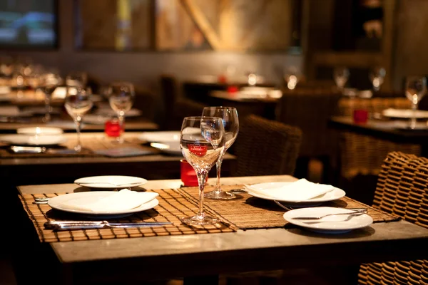

Sobre a Página!
A ABANORTE e a EMBRAPA convidam você para a IV edição do Abanorte Fruit Connections e BananaFit - Uma jornada de saber e sabor no sertão 100% nortineiro, terra de um povo indomável, de coragem e adaptabilidade. Lugar de gente raiz, forjado de sol a pino, que conhece o gosto pela tecnologia e o desenvolvimento e que produzem frutas com fibras feitas de sol. Terra de quem plantou raízes, conquistou o pioneirismo e tornou o norte de minas um dos maiores polos de fruticultura do Brasil.
A expectativa é que, assim como nos anos anteriores, o evento atraia um público de aproximadamente 600 pessoas, entre brasileiros e estrangeiros, que terão a oportunidade de adquirir conhecimentos, trocar experiências e fazer negócios. Serão mais de 30 palestras/debates, 30 estandes, além de vários momentos para Networking, experiências gastronômicas e culturais.

Os bares, restaurantes e hotéis da cidade já estão no clima do evento. Durante os quatro dias do Abanorte Fruit Connections - IV Edição, será realizado em Janaúba, um grande Circuito Gastronômico, onde os estabelecimentos que aderiram ao movimento criaram um cardápio especial 100% NORTINEIRO, com pratos e bebidas compostos com as sete principais frutas produzidas em grande escala na região. São elas: banana, manga, limão, mexerica ponkan, mamão, uva e cacau.